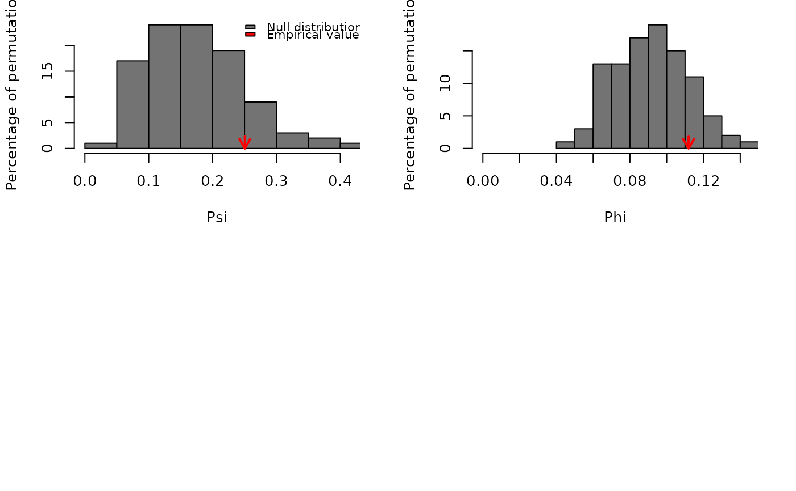
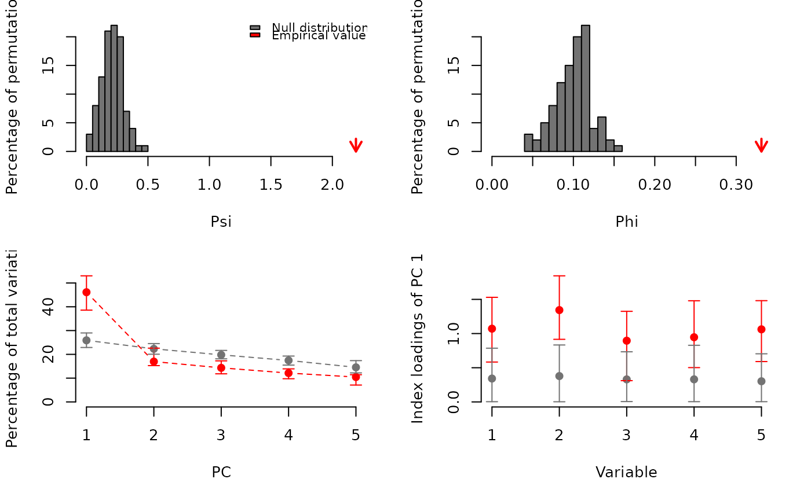
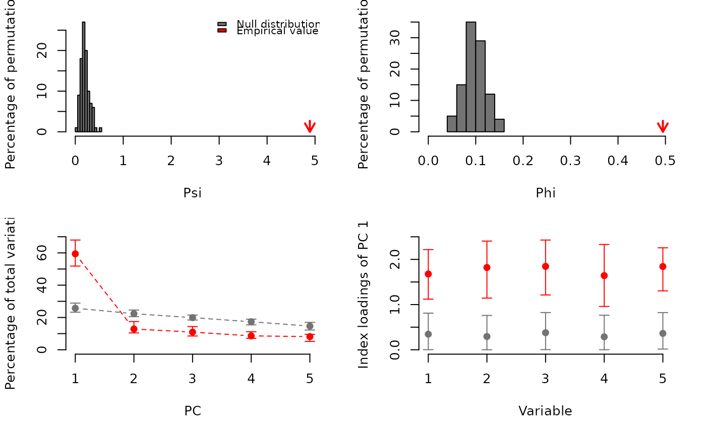
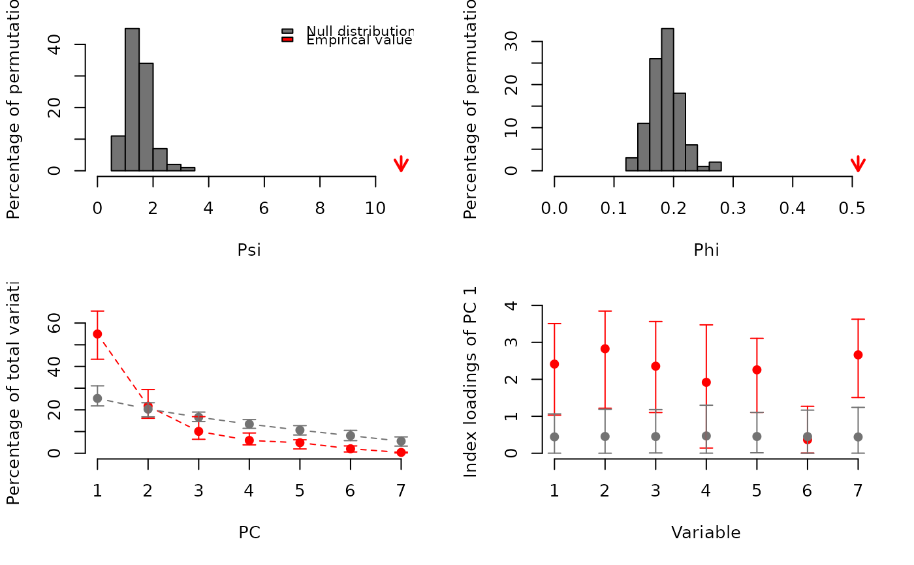

PCAtest: Statistical Significance of PCA
PCAtest.RdPCAtest uses random permutations to build null distributions for several statistics of a PCA analysis: Psi (Vieira 2012), Phi (Gleason and Staelin 1975), the rank-of-roots (ter Braak 1988), the index of the loadings (Vieira 2012), and the correlations of the PC with the variables (Jackson 1991). Comparing these distributions with the observed values of the statistics, the function tests: (1) the hypothesis that there is more correlational structure among the observed variables than expected by random chance, (2) the statistical significance of each PC, and (3) the contribution of each observed variable to each significant PC. The function also calculates the sampling variance around mean observed statistics based on bootstrap replicates.
Usage
PCAtest(
x,
nperm = 1000,
nboot = 1000,
alpha = 0.05,
indload = TRUE,
varcorr = FALSE,
counter = TRUE,
plot = TRUE
)Arguments
- x
A matrix or dataframe with variables in the columns and the observations in the rows.
- nperm
Number of random permutations to build null distributions of the statistics.
- nboot
Number of bootstrap replicates to build 95%-confidence intervals of the observed statistics.
- alpha
Nominal alpha level for statistical tests.
- indload
A logical indicating whether to calculate the index loadings of the variables with the significant PCs.
- varcorr
A logical indicating whether to calculate the correlations of the variables with the significant PCs.
- counter
A logical specifying whether to show the progress of the random sampling (bootstrap and permutations) on the screen.
- plot
A logical specifying whether to plot the null distributions, observed statistics, and 95%-confidence intervals of statistics based on random permutation and bootstrap resampling.
Value
An object of class “list” with the following elements:
- psiobs
The observed Psi statistic.
- phiobs
The observed Phi statistic.
- psi
The null distribution of Psi values.
- phi
The null distribution of Phi values.
- pervarobs
The percentage of variance explained by each PC based on the observed data.
- pervarboot
The percentage of variance explained by each PC based on the bootstrapped data.
- pervarbootci
Confidence intervals of the percentage of variance explained by each PC based on the bootstrapped data.
- pervarperm
The percentage of variance explained by each PC based on the randomized data.
- pervarpermci
Confidence intervals of the percentage of variance explained by each PC based on the randomized data.
- indexloadobs
The index of the loadings of the observed data.
- indexloadboot
The index of the loadings of the bootstrapped data.
- indexloadbootci
Confidence intervals of the index of the loadings based on the bootstrapped data.
- indexloadperm
The index of the loadings based on the randomized data.
- indexloadpermci
Confidence intervals of the index of the loadings based on the randomized data.
- corobs
If varcorr=TRUE, the correlations of the observed variables with each significant PC.
- corboot
If varcorr=TRUE, the correlations of the observed variables with each significant PC based on the bootstrapped data.
- corbootci
If varcorr=TRUE, the confidence intervals of the correlations of the variables with each significant PC based on the bootstrapped data.
- corperm
If varcorr=TRUE, the correlations of the observed variables with each significant PC based on randomized data.
- corpermci
If varcorr=TRUE, the confidence intervals of the correlations of the variables with each significant PC based on randomized data.
Details
PCAtest uses the function stats::prcomp to run a PCA using the arguments scale = TRUE and center = TRUE. PCAtest plots four types of graphs in a single page: (1) a histogram showing the null distribution and the observed value of the Psi statistic, (2) a histogram showing the null distribution and the observed value of the Phi statistic, (3) a bar plot of the percentage of explained variance of each PC1, PC2, ..., etc., showing the sampling variance based on bootstrap replicates and random permutations with 95%-confidence intervals, and (4) a bar plot of the index of the loadings of each observed variable for PC1, showing the sampling variance of bootstrap replicates and random permutations with 95%- confidence intervals. If more than one PC is significant, additional plots for the index of the loadings are shown in as many new pages as necessary given the number of significant PCs. If the PCA is not significant, based on the Psi and Phi testing results, only histograms (1) and (2) are shown.
References
Gleason, T. C. and Staelin R. (1975) A proposal for handling missing data. Psychometrika, 40, 229–252.
Jackson, J. E. (1991) A User’s Guide to Principal Components. John Wiley & Sons, New York, USA.
Ringnér, M. (2008) What is principal component analysis? Nature Biotechnology, 26, 303–304.
ter Braak, C. F. J. (1990) Update notes: CANOCO (version 3.1). Agricultural Mattematic Group, Report LWA-88-02, Wagningen, Netherlands.
Vieira, V. M. N. C. S. (2012) Permutation tests to estimate significances on Principal Components Analysis. Computational Ecology and Software, 2, 103–123.
Wong, M. K. L. and Carmona, C. P. (2021) Including intraspecific trait variability to avoid distortion of functional diversity and ecological inference: Lessons from natural assemblages. Methods in Ecology and Evolution. https://doi.org/10.1111/2041- 210X.13568.
Examples
#PCA analysis of five uncorrelated (r=0) variables
library(MASS)
mu <- rep(0,5)
Sigma <- matrix(c(rep(c(1,0,0,0,0,0),4),1),5)
ex0 <- mvrnorm(100, mu = mu, Sigma = Sigma )
result<-PCAtest(ex0, 100, 100, 0.05, varcorr=FALSE, counter=FALSE, plot=TRUE)
#>
#> Sampling bootstrap replicates... Please wait
#>
#> Calculating confidence intervals of empirical statistics... Please wait
#>
#> Sampling random permutations... Please wait
#>
#> Comparing empirical statistics with their null distributions... Please wait
#>
#> ========================================================
#> Test of PCA significance: 5 variables, 100 observations
#> 100 bootstrap replicates, 100 random permutations
#> ========================================================
#>
#> Empirical Psi = 0.2505, Max null Psi = 0.4141, Min null Psi = 0.0363, p-value = 0.15
#> Empirical Phi = 0.1119, Max null Phi = 0.1439, Min null Phi = 0.0426, p-value = 0.15
#>
#> PCA is not significant!
#PCA analysis of five correlated (r=0.25) variables
Sigma <- matrix(c(rep(c(1,0.25,0.25,0.25,0.25,0.25),4),1),5)
ex025 <- mvrnorm(100, mu = mu, Sigma = Sigma )
result<-PCAtest(ex025, 100, 100, 0.05, varcorr=FALSE, counter=FALSE, plot=TRUE)

#>
#> Sampling bootstrap replicates... Please wait
#>
#> Calculating confidence intervals of empirical statistics... Please wait
#>
#> Sampling random permutations... Please wait
#>
#> Comparing empirical statistics with their null distributions... Please wait
#>
#> ========================================================
#> Test of PCA significance: 5 variables, 100 observations
#> 100 bootstrap replicates, 100 random permutations
#> ========================================================
#>
#> Empirical Psi = 2.1917, Max null Psi = 0.4513, Min null Psi = 0.0413, p-value = 0
#> Empirical Phi = 0.3310, Max null Phi = 0.1502, Min null Phi = 0.0454, p-value = 0
#>
#> Empirical eigenvalue #1 = 2.30607, Max null eigenvalue = 1.4752, p-value = 0
#> Empirical eigenvalue #2 = 0.84801, Max null eigenvalue = 1.2983, p-value = 1
#> Empirical eigenvalue #3 = 0.71629, Max null eigenvalue = 1.12184, p-value = 1
#> Empirical eigenvalue #4 = 0.60657, Max null eigenvalue = 0.97008, p-value = 1
#> Empirical eigenvalue #5 = 0.52305, Max null eigenvalue = 0.9082, p-value = 0.99
#>
#> PC 1 is significant and accounts for 46.1% (95%-CI:38.6-53) of the total variation
#>
#> Variables 1, 2, 3, 4, and 5 have significant loadings on PC 1
#>

#PCA analysis of five correlated (r=0.5) variables
Sigma <- matrix(c(rep(c(1,0.5,0.5,0.5,0.5,0.5),4),1),5)
ex05 <- mvrnorm(100, mu = mu, Sigma = Sigma )
result<-PCAtest(ex05, 100, 100, 0.05, varcorr=FALSE, counter=FALSE, plot=TRUE)
#>
#> Sampling bootstrap replicates... Please wait
#>
#> Calculating confidence intervals of empirical statistics... Please wait
#>
#> Sampling random permutations... Please wait
#>
#> Comparing empirical statistics with their null distributions... Please wait
#>
#> ========================================================
#> Test of PCA significance: 5 variables, 100 observations
#> 100 bootstrap replicates, 100 random permutations
#> ========================================================
#>
#> Empirical Psi = 4.8917, Max null Psi = 0.5080, Min null Psi = 0.0431, p-value = 0
#> Empirical Phi = 0.4946, Max null Phi = 0.1594, Min null Phi = 0.0464, p-value = 0
#>
#> Empirical eigenvalue #1 = 2.97094, Max null eigenvalue = 1.5192, p-value = 0
#> Empirical eigenvalue #2 = 0.64342, Max null eigenvalue = 1.26189, p-value = 1
#> Empirical eigenvalue #3 = 0.54736, Max null eigenvalue = 1.10163, p-value = 1
#> Empirical eigenvalue #4 = 0.43055, Max null eigenvalue = 0.97966, p-value = 1
#> Empirical eigenvalue #5 = 0.40773, Max null eigenvalue = 0.86767, p-value = 1
#>
#> PC 1 is significant and accounts for 59.4% (95%-CI:51.8-68) of the total variation
#>
#> Variables 1, 2, 3, 4, and 5 have significant loadings on PC 1
#>

#PCA analysis of seven morphological variables from 29 ant species (from
#Wong and Carmona 2021, https://doi.org/10.1111/2041-210X.13568)
data("ants")
result<-PCAtest(ants, 100, 100, 0.05, varcorr=FALSE, counter=FALSE, plot=TRUE)
#>
#> Sampling bootstrap replicates... Please wait
#>
#> Calculating confidence intervals of empirical statistics... Please wait
#>
#> Sampling random permutations... Please wait
#>
#> Comparing empirical statistics with their null distributions... Please wait
#>
#> ========================================================
#> Test of PCA significance: 7 variables, 29 observations
#> 100 bootstrap replicates, 100 random permutations
#> ========================================================
#>
#> Empirical Psi = 10.9186, Max null Psi = 3.0303, Min null Psi = 0.6274, p-value = 0
#> Empirical Phi = 0.5099, Max null Phi = 0.2686, Min null Phi = 0.1222, p-value = 0
#>
#> Empirical eigenvalue #1 = 3.84712, Max null eigenvalue = 2.33045, p-value = 0
#> Empirical eigenvalue #2 = 1.52017, Max null eigenvalue = 1.63299, p-value = 0.25
#> Empirical eigenvalue #3 = 0.70634, Max null eigenvalue = 1.4709, p-value = 1
#> Empirical eigenvalue #4 = 0.41356, Max null eigenvalue = 1.10378, p-value = 1
#> Empirical eigenvalue #5 = 0.34001, Max null eigenvalue = 0.91727, p-value = 1
#> Empirical eigenvalue #6 = 0.14515, Max null eigenvalue = 0.77857, p-value = 1
#> Empirical eigenvalue #7 = 0.02765, Max null eigenvalue = 0.55742, p-value = 1
#>
#> PC 1 is significant and accounts for 55% (95%-CI:43.3-65.5) of the total variation
#>
#> Variables 1, 2, 3, 4, 5, and 7 have significant loadings on PC 1
#>
